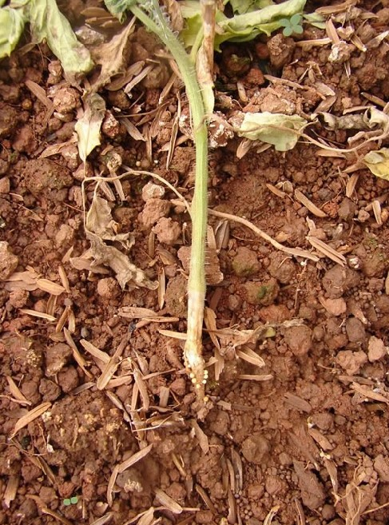
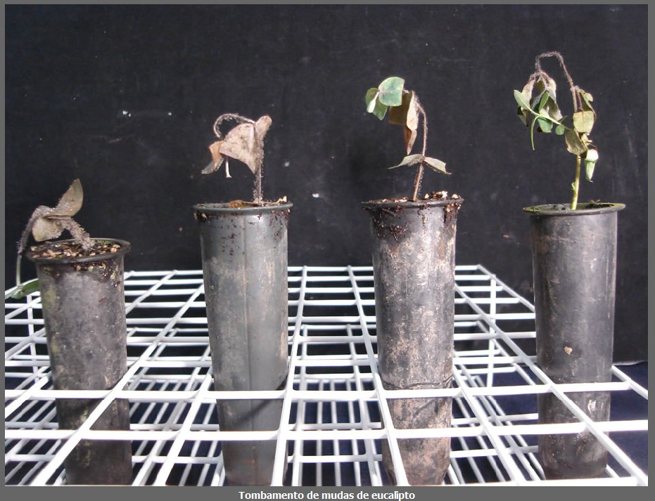
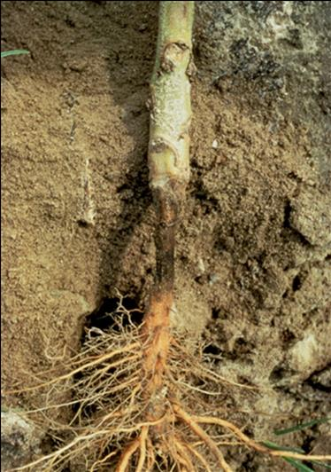

Saiba mais sobre as doenças

Tombamento de mudas em tomateiro (Fungos e Oomicetos)
Sintomas: No campo os sintomas ocorrem em reboleiras e causa a diminuição no estande
da cultura. Em viveiros pode ocorrer contaminação de mudas devido a presença do patógeno na semente,
na água e ou no substrato.
Os danos podem ocorrer na pré emergência, onde a planta não emerge, ou pós emergência, neste
caso pode ocorrer uma podridão de raiz ou no colo, seguido pela morte da planta.
Estruturas: Caso o agente causal seja um oomiceto (Pythium spp. e
Phytophthora spp.), as lesões apresentam-se aquosas e escuras crescendo em direção ao solo.
Com o desenvolvimento da doença, todo o colo adquiri aspecto de podridão ocasionando o tombamento e
morte da planta. Quando causa por fungos de solo (Rhizoctonia solani, Sclerotium rolfsii e
Fusarium), a lesão não é aquosa, podendo ser escura, ataques tardios a planta podem não
ocasionar na
morte da planta, mas seu desenvolvimento pode ser prejudicado. Os frutos também podem apresentar os
sintomas de podridões, caso estes estejam perto do solo.
No Brasil, o agente causal mais encontrado é Pythium aphanidermatum.
Esses patógenos apresentam um alto potencial de sobrevivência no solo, através de sua forma
saprofítica ou por meio de estruturas de resistência, exemplo os oósporos nos oomicetos, e os
clamidósporos e escleródios.
Condições favoráveis: Sua ocorrência está associada a alta umidade no solo (solos com menor capacidade de drenagem por exemplo), sendo a água sua principal forma de disseminação.
Recomendações de controle: Seu controle é feito de maneira preventiva. Nos viveiros buscar a qualidade e sanidade das mudas, evitando o uso de sementes, substratos e água contaminados. Limpar e descontaminar as bandejas após utilização, e em caso de tombamento descartar toda a bandeja onde houve o aparecimento dos sintomas. Em campo, evitar o transplantio em solos compactados com risco de encharcamento, evitar o uso de maquinário e implementos que anteriormente foram utilizados em áreas contaminadas para o preparo de novas áreas de plantio. Em caso de sintomas na área reduzir a irrigação, caso presente, e eliminar as mudas afetadas e tratar com caldas de fungicidas adequados e liberados para a região.
Damping-off (Fungos e Oomicetos)
Sintomas: O tombamento de mudas é uma doença de importância para os viveiros de pequenos produtores de mudas da espécie florestal. Os sintomas, o tombamento, pode ocorrer na pré-emergência, onde as sementes são destruídas, ou pós- emergência onde os tecidos mais tenros e suculentos são atacados. O sintoma inicial característico é o aparecimento de lesão encharcada na região do colo da muda, podendo crescer e se estender ao hipocótilo, com o tempo adquiri coloração escura. Murcha, enrolamento e seca dos cotilédones e das primeiras folhas verdadeiras, são sintomas secundários da doença. A muda acaba tombando e morrendo em decorrência dos danos provocados em seu tecido. No campo os sintomas aparecem em reboleiras, principalmente em áreas novas que foram semeadas a lanço, nessas manchas é possível notar mudinhas em várias fases diferentes da doença, estando as do centro as mais afetadas. Nos canteiros e em tubetes, onde é realizado a semeadura direta, a doença se apresenta de maneira mais esparsa devido a separação das mudas nos recipientes, o que dificulta a disseminação.
Estruturas: Os agentes causais são patógenos habitantes do solo que podem sobreviver saprofiticamente ou através de estruturas de resistência, como escleródios (Rhizoctonia), microescleródios (Cylindrocladium), clamidiósporo (Fusarium), e oósporos (Phytophthora e Pythium). A entrada do patógeno ocorre pelas paredes celulares da epiderme da raiz ou do hipocótilo e em seguida pela colonização do micélio nos tecidos da planta, estes acabam sendo degradados através das enzimas e/ou toxinas produzidas pelos fungos.
Condições favoráveis:As temperaturas ótimas de ocorrência variam entre os patógenos, Cylindrocladium candelabrum, tem seu crescimento favorecido em temperaturas próximas a 28°C, em quando que determinadas espécies de Pythium se desenvolvem em temperaturas mais baixas. De maneira geral ambientes de alta umidade do ar e substratos úmidos favorecem a ocorrência de tombamento. A adubação concentrada em nitrogênio pode contribuir para o desenvolvimento da doença, pois deixa as plantas tenras por um período de tempo maior, prolongando o período de suscetibilidade. Um menor espaçamento, também contribui para a incidência da doença.
Recomendações de controle: O controle da qualidade e da sanidade dos substratos
utilizados para a estaquia ou semeadura direta em viveiros auxilia a evitar a presença da doença.
Utilizar sementes, substratos e água de irrigação livres do patógeno são medidas importantes a serem
tomadas, assim como ter o piso do viveiro coberto seja por brita ou cimento, realizar o desbaste
quanto antes, retirar mudas doentes e mortas, adubar corretamente evitando excessos de nitrogênio e
utilizar substratos de boa drenagem. A descontaminação do substrato pode ser feita utilizando calor,
através do aquecimento com vapor ou da solarização. Não existe produtos registrados no Brasil para o
controle de doenças de eucalipto em viveiros, mas recomenda-se a rotação de princípios ativos,
conforme o patógeno presente em campo, esses tratamentos são utilizados de forma preventiva, mas
podem apresentar efeito erradicante. Pode-se citar o metalaxil para Phythim e phytophthora,
captana e iprodiona para o controle da Rhizoctonia, por exemplo.
O uso de inimigos naturais também é indicado, ele pode ser feito através da infestação do
Trichoderma no substrato, ou da utilização de substratos com alto teor de matéria orgânica.
Rizobactérias também podem ser utilizadas.
Tombamento de Phytophthora (Phytophthora spp.)
Sintomas: Entre as várias doenças provocadas pelo gênero Phytophthora nos citros, está o “damping off” ou mela das plântulas. Os sintomas ocorrem em sementeiras logo após a germinação das plântulas, a entrada do patógeno ocorre pelos tecidos da base do culículo, resultando em lesões escuras e deprimidas. Em condições de alta temperatura e umidade, as plântulas morrem devido ao aumento da lesão. A podridão pode infectar as sementes, causando a redução no estande das sementeiras, “damping off” pré-emergência. Espécies do gênero Pythium e Rhizoctonia também podem causar tombamentos.
Estruturas: No Brasil, os principais agentes causadores são a Phytophthora nicotianae e P. citrophthora. O micélio é hialino e não apresenta septos. A reprodução assexuada ocorre através de esporângios que se formam em terminações de hifas especializadas, chamadas de esporangióforos. Os esporângios podem germinar diretamente, formando tubos germinativos, ou indiretamente pelos esporos móveis, este modo de germinação é considerado a mais importante. Os esporangióforos ao entrarem em contado com órgãos da planta ou das raízes, eles germinam e produzem hifas. P. nicotianae produz clamidiósporos, estrutura de resistência, quando em condições de baixas temperaturas e baixa disponibilidade de oxigênio.
Condições favoráveis: Condições de alta temperatura e umidade favorecem o aparecimento da doença. Em condições favoráveis os ciclos são rápidos, em torno de 24h.
Recomendações de controle: O controle é feito utilizando porta-enxertos resistentes ou tolerantes e sadios. As mudas devem ser produzidas em locais protegidos utilizando substratos livres de patógenos e água tratada e antes de serem comercializadas as mudas devem passar por teses. As sementes utilizadas devem ser registradas e submetidas a tratamento térmico. Evitar o plantio em áreas com solo rasos, mal drenados e com risco de erosão. A utilização de adubos orgânicos favorece para o desenvolvimento de microrganismos antagonistas ao patógeno. Nos pomares evitar o uso de gradas e subsoladores, cuidar da irrigação de modo que a base das plantas não fique úmida. O controle químico pode ser feito de modo preventivo utilizando fungicidas sistêmicos e fosfitos, através de pulverizações foliares, evitando podridões radiculares. Pulverizações podem ser dirigidas para a base das plantas utilizando produtos à base de cobre, após o período das chuvas evitando assim podridões.